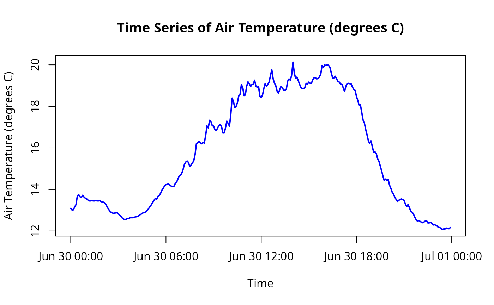
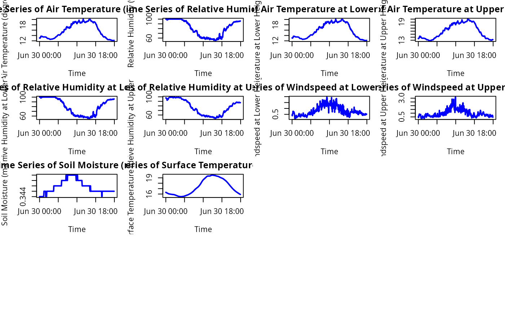

plot_weather_station.RdThis function creates a time series plot of a specified variable from a weather station object. If no variable is specified, it will plot all time series variables in a grid layout.
plot_weather_station(weather_station, variable_name = NULL)A plot is created as a side effect.
The plot_weather_station function generates a time series line plot for a specified variable within a weather station object. If no variable is specified, it plots all available time series variables in a grid layout. Non-time series variables, such as those with a single value or character data, are automatically excluded.
The function uses base R plotting functions to ensure minimal dependencies and simplicity in usage.
# Assuming `weather_station` is a list or data frame with a datetime field and other variables
# Example weather_station object creation
weather_station <- list(
datetime = as.POSIXct(c("2023-08-01 00:00", "2023-08-01 01:00", "2023-08-01 02:00")),
temp = c(15.5, 16.0, 16.5),
windspeed = c(3.2, 3.5, 3.1),
location = "Test Location" # This will be excluded from the plot
)
# Plot the temperature data
plot_weather_station(weather_station, "temp")

# Plot all time series variables
plot_weather_station(weather_station, NULL)
